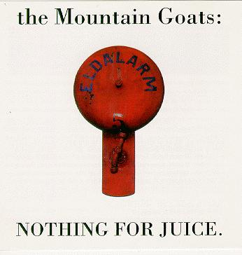

nothing for juice

title: nothing for juice
latin: nec minoris inpotentiae uoces propalam edebat, ut Titus
Ampius scribit: nihil esse rem publicam, appellationem modo sine corpore
ac specie. Sullam nescisse litters, qui dictaturam deposuerit. debere
homines consideratius iam loqui secum ac pro legibus habere quae dicat.
eoque arrogantiae progressus est, ut haruspice tristia et sine corde exta
quondam nuntiante, futura diceret laetiroa, cum uellet; nec pro ostento
ducendum, si pecudi cor defuisset.
--Suetonius, De Vita Caesarum, I: Ixxvii.
cool quote: the value and dignity of everyday words is to be as
close as possible to nothing. invisible, not letting anything be
seen, always beyond themselves, always on this side of things, a pure
awareness crosses them, so discreetly that it itself can sometimes be
lacking. everything then is nullity. and yet, understanding does not
stop occuring; it even seems that it attains its point of perfection.
what could be richer then this extreme destitution?
--maurice blanchot, the language of fiction; translated by charlotte mandell.
songs:
then the letting go
heights
alpha double negative: going to catalina
hellhound on my trail
blueberry frost
alabama nova
moon and sand
i will grab you by the ears
it froze me
full flower
million
going to bogatá
orange ball of pain
going to kansas
waving at you
going to reykjavik
I corinthians 13: 8-10
going to scotland